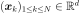
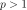
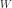
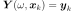
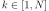
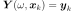
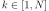

KrigingAlgorithm¶
(Source code, png, hires.png, pdf)
{kind=link}
{kind=link}
- class KrigingAlgorithm(*args)¶
Kriging algorithm.
Refer to Kriging.
- Available constructors:
KrigingAlgorithm(inputSample, outputSample, covarianceModel, basis)
KrigingAlgorithm(inputSample, outputSample, covarianceModel, basisCollection)
- Parameters
- inputSample, outputSample2-d sequence of float
The samples  and
 upon which the meta-model is built.
upon which the meta-model is built.- covarianceModel
CovarianceModel Covariance model used for the underlying Gaussian process assumption.
- basis
Basis Functional basis to estimate the trend (universal kriging): .
If , the same basis is used for each marginal output.
- basisCollectionsequence of
Basis Collection of
 functional basis: one basis for each marginal output: . If the sequence is empty, no trend coefficient is estimated (simple kriging).
functional basis: one basis for each marginal output: . If the sequence is empty, no trend coefficient is estimated (simple kriging).
Notes
We suppose we have a sample where for all k, with the model.
The meta model Kriging is based on the same principles as those of the general linear model: it assumes that the sample is considered as the trace of a Gaussian process on . The Gaussian process is defined by:
(1)¶
where:
with
 and
and  the trend functions.
the trend functions. is a Gaussian process of dimension p with zero mean and covariance function (see
CovarianceModelfor the notations).The estimation of the all parameters (the trend coefficients
 , the scale
, the scale  and the amplitude ) are made by the
and the amplitude ) are made by the GeneralLinearModelAlgorithmclass.The Kriging algorithm makes the general linear model interpolating on the input samples. The Kriging meta model
 is defined by:
is defined by:
where
 is the condition  for each .
is the condition  for each .(1) writes:
where is a matrix in
 and .
and .A known centered gaussian observation noise can be taken into account with
setNoise():Examples
Create the model
 and the samples:
and the samples:>>> import openturns as ot >>> f = ot.SymbolicFunction(['x'], ['x * sin(x)']) >>> sampleX = [[1.0], [2.0], [3.0], [4.0], [5.0], [6.0], [7.0], [8.0]] >>> sampleY = f(sampleX)
Create the algorithm:
>>> basis = ot.Basis([ot.SymbolicFunction(['x'], ['x']), ot.SymbolicFunction(['x'], ['x^2'])]) >>> covarianceModel = ot.SquaredExponential([1.0]) >>> covarianceModel.setActiveParameter([]) >>> algo = ot.KrigingAlgorithm(sampleX, sampleY, covarianceModel, basis) >>> algo.run()
Get the resulting meta model:
>>> result = algo.getResult() >>> metamodel = result.getMetaModel()
Methods
BuildDistribution(inputSample)Recover the distribution, with metamodel performance in mind.
Accessor to the object's name.
Accessor to the joint probability density function of the physical input vector.
getId()Accessor to the object's id.
Accessor to the input sample.
Linear algebra method accessor.
getName()Accessor to the object's name.
getNoise()Observation noise variance accessor.
Accessor to solver used to optimize the covariance model parameters.
Accessor to the optimization bounds.
Accessor to the covariance model parameters optimization flag.
Accessor to the output sample.
Accessor to the reduced log-likelihood function that writes as argument of the covariance's model parameters.
Get the results of the metamodel computation.
Accessor to the object's shadowed id.
Accessor to the object's visibility state.
hasName()Test if the object is named.
Test if the object has a distinguishable name.
run()Compute the response surface.
setDistribution(distribution)Accessor to the joint probability density function of the physical input vector.
setMethod(method)Linear algebra method set accessor.
setName(name)Accessor to the object's name.
setNoise(noise)Observation noise variance accessor.
setOptimizationAlgorithm(solver)Accessor to the solver used to optimize the covariance model parameters.
setOptimizationBounds(optimizationBounds)Accessor to the optimization bounds.
setOptimizeParameters(optimizeParameters)Accessor to the covariance model parameters optimization flag.
setShadowedId(id)Accessor to the object's shadowed id.
setVisibility(visible)Accessor to the object's visibility state.
- __init__(*args)¶
- static BuildDistribution(inputSample)¶
Recover the distribution, with metamodel performance in mind.
For each marginal, find the best 1-d continuous parametric model else fallback to the use of a nonparametric one.
The selection is done as follow:
We start with a list of all parametric models (all factories)
For each model, we estimate its parameters if feasible.
We check then if model is valid, ie if its Kolmogorov score exceeds a threshold fixed in the MetaModelAlgorithm-PValueThreshold ResourceMap key. Default value is 5%
We sort all valid models and return the one with the optimal criterion.
For the last step, the criterion might be BIC, AIC or AICC. The specification of the criterion is done through the MetaModelAlgorithm-ModelSelectionCriterion ResourceMap key. Default value is fixed to BIC. Note that if there is no valid candidate, we estimate a non-parametric model (
KernelSmoothingorHistogram). The MetaModelAlgorithm-NonParametricModel ResourceMap key allows selecting the preferred one. Default value is HistogramOne each marginal is estimated, we use the Spearman independence test on each component pair to decide whether an independent copula. In case of non independence, we rely on a
NormalCopula.- Parameters
- sample
Sample Input sample.
- sample
- Returns
- distribution
Distribution Input distribution.
- distribution
- getClassName()¶
Accessor to the object’s name.
- Returns
- class_namestr
The object class name (object.__class__.__name__).
- getDistribution()¶
Accessor to the joint probability density function of the physical input vector.
- Returns
- distribution
Distribution Joint probability density function of the physical input vector.
- distribution
- getId()¶
Accessor to the object’s id.
- Returns
- idint
Internal unique identifier.
- getMethod()¶
Linear algebra method accessor.
- Returns
- methodstr
Used linear algebra method.
- getName()¶
Accessor to the object’s name.
- Returns
- namestr
The name of the object.
- getNoise()¶
Observation noise variance accessor.
- Returns
- noisesequence of positive float
The noise variance of each output value.
- getOptimizationAlgorithm()¶
Accessor to solver used to optimize the covariance model parameters.
- Returns
- algorithm
OptimizationAlgorithm Solver used to optimize the covariance model parameters.
- algorithm
- getOptimizationBounds()¶
Accessor to the optimization bounds.
- Returns
- problem
Interval The bounds used for numerical optimization of the likelihood.
- problem
- getOptimizeParameters()¶
Accessor to the covariance model parameters optimization flag.
- Returns
- optimizeParametersbool
Whether to optimize the covariance model parameters.
- getReducedLogLikelihoodFunction()¶
Accessor to the reduced log-likelihood function that writes as argument of the covariance’s model parameters.
- Returns
- reducedLogLikelihood
Function The potentially reduced log-likelihood function.
- reducedLogLikelihood
Notes
We use the same notations as in
CovarianceModelandGeneralLinearModelAlgorithm: refers to the scale parameters and
the amplitude. We can consider three situtations here:Output dimension is . In that case, we get the full log-likelihood function .
Output dimension is 1 and the GeneralLinearModelAlgorithm-UseAnalyticalAmplitudeEstimate key of
ResourceMapis set to True. The amplitude parameter of the covariance model is in the active set of parameters and thus we get the reduced
log-likelihood function .Output dimension is 1 and the GeneralLinearModelAlgorithm-UseAnalyticalAmplitudeEstimate key of
ResourceMapis set to False. In that case, we get the full log-likelihood .
The reduced log-likelihood function may be useful for some pre/postprocessing: vizualisation of the maximizer, use of an external optimizers to maximize the reduced log-likelihood etc.
Examples
Create the model
and the samples:>>> import openturns as ot >>> f = ot.SymbolicFunction(['x0'], ['x0 * sin(x0)']) >>> inputSample = ot.Sample([[1.0], [3.0], [5.0], [6.0], [7.0], [8.0]]) >>> outputSample = f(inputSample)
Create the algorithm:
>>> basis = ot.ConstantBasisFactory().build() >>> covarianceModel = ot.SquaredExponential(1) >>> algo = ot.KrigingAlgorithm(inputSample, outputSample, covarianceModel, basis) >>> algo.run()
Get the reduced log-likelihood function:
>>> reducedLogLikelihoodFunction = algo.getReducedLogLikelihoodFunction()
- getResult()¶
Get the results of the metamodel computation.
- Returns
- result
KrigingResult Structure containing all the results obtained after computation and created by the method
run().
- result
- getShadowedId()¶
Accessor to the object’s shadowed id.
- Returns
- idint
Internal unique identifier.
- getVisibility()¶
Accessor to the object’s visibility state.
- Returns
- visiblebool
Visibility flag.
- hasName()¶
Test if the object is named.
- Returns
- hasNamebool
True if the name is not empty.
- hasVisibleName()¶
Test if the object has a distinguishable name.
- Returns
- hasVisibleNamebool
True if the name is not empty and not the default one.
- run()¶
Compute the response surface.
Notes
It computes the kriging response surface and creates a
KrigingResultstructure containing all the results.
- setDistribution(distribution)¶
Accessor to the joint probability density function of the physical input vector.
- Parameters
- distribution
Distribution Joint probability density function of the physical input vector.
- distribution
- setMethod(method)¶
Linear algebra method set accessor.
- Parameters
- methodstr
Used linear algebra method. Value should be LAPACK or HMAT
Notes
The setter update the implementation and require new evaluation. We might also use the ResourceMap key to set the method when instantiating the algorithm. For that purpose, we can use ResourceMap.SetAsString(GeneralLinearModelAlgorithm-LinearAlgebra, key) with key being HMAT or LAPACK.
- setName(name)¶
Accessor to the object’s name.
- Parameters
- namestr
The name of the object.
- setNoise(noise)¶
Observation noise variance accessor.
- Parameters
- noisesequence of positive float
The noise variance of each output value.
- setOptimizationAlgorithm(solver)¶
Accessor to the solver used to optimize the covariance model parameters.
- Parameters
- algorithm
OptimizationAlgorithm Solver used to optimize the covariance model parameters.
- algorithm
Examples
Create the model
and the samples:>>> import openturns as ot >>> input_data = ot.Uniform(-1.0, 2.0).getSample(10) >>> model = ot.SymbolicFunction(['x'], ['x-1+sin(pi_*x/(1+0.25*x^2))']) >>> output_data = model(input_data)
Create the Kriging algorithm with the optimizer option:
>>> basis = ot.Basis([ot.SymbolicFunction(['x'], ['0.0'])]) >>> thetaInit = 1.0 >>> covariance = ot.GeneralizedExponential([thetaInit], 2.0) >>> bounds = ot.Interval(1e-2,1e2) >>> algo = ot.KrigingAlgorithm(input_data, output_data, covariance, basis) >>> algo.setOptimizationBounds(bounds)
- setOptimizationBounds(optimizationBounds)¶
Accessor to the optimization bounds.
- Parameters
- bounds
Interval The bounds used for numerical optimization of the likelihood.
- bounds
Notes
See
GeneralLinearModelAlgorithmclass for more details, particularlysetOptimizationBounds().
- setOptimizeParameters(optimizeParameters)¶
Accessor to the covariance model parameters optimization flag.
- Parameters
- optimizeParametersbool
Whether to optimize the covariance model parameters.
- setShadowedId(id)¶
Accessor to the object’s shadowed id.
- Parameters
- idint
Internal unique identifier.
- setVisibility(visible)¶
Accessor to the object’s visibility state.
- Parameters
- visiblebool
Visibility flag.